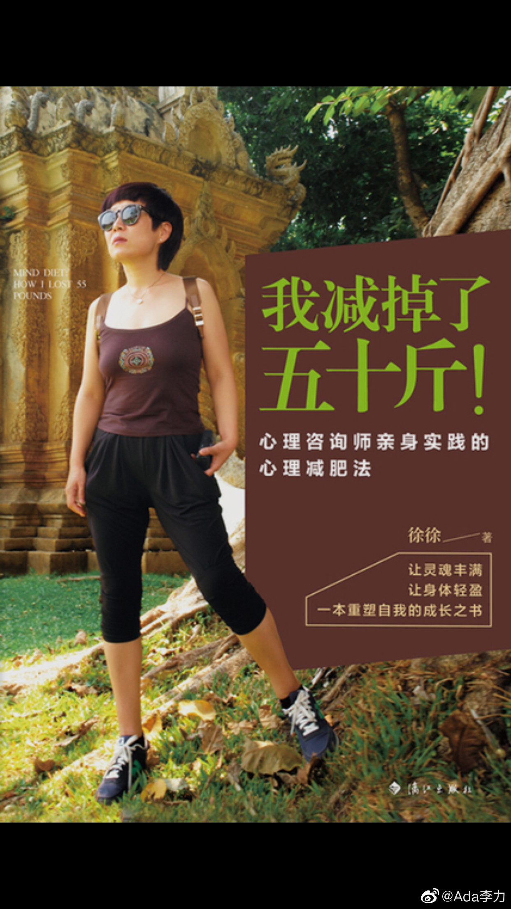

#不明所以#
我现在基本上已经不怎么看减肥方面的书了，但这本《我减掉了50斤》还是引起了我的兴趣，因为是一名心理咨询师所写的，而且她把减肥方法命名为心理减肥法。很巧的是，轻断食群有位朋友说她两年减了20斤，也是用了自创的心理减肥法。我对心理方面的话题一直还是很感兴趣。
总体来讲，这不是一本关于怎么减肥的书，更多是作者在讲述自己如何通过反思与实践，与母亲达成和解的一个过程。作者作为学业和工作都相当有自律精神并且是成功的人士，但在饮食上向来没有自律精神，她找出来的根本原因就是他用食物来满足很多其它匮乏的一些需求。
作者胖了几十年，而下决心减肥的起点，来自于有个做心理杂志的朋友在听了她对母亲的抱怨后："说你可能要承认的是，你的母亲可能没有那么爱你，她可能不是不爱，而是没有能力去爱"，这段话对作者的影响犹如五雷轰顶，让她整整一晚上都在思索，这几十年跟母亲的纠葛。
作者说其实之前心里也有过这样的疑问，但从来不肯往下想，而是会转而自责自己太没良心，或者没孝心。她总结说，人其实是善于欺骗自己的。但是只要肯对自己诚实，很多事情就解开了死结。当然这个过程可能是血淋淋的。
作者也用了很多篇幅来讲，她怎么摆脱了母亲的无意识操纵和控制，更多精力放在关注自己的内心感受和想法上。这段话可能是全书的核心："自我接纳之后的轻松，对身体和心灵都有医疗作用，他让我们充满自信，也知道自己能力的边界，不苛求别人，也不苛求自己，对于包括减肥目标在内的任何目标都可以表现的，既有坚定的信心，又不急于求成，有一种气定神闲等待开花结果的沉静气度"。
作者还做实验招募了一些愿意参加心理减肥法的志愿者，书中给了几个改变的实例，虽然不一定都是有这种心理上的纠结，造成了减肥的困难，但都有类似的特征，就是身体肥胖往往只是一种表现，比如心理层面的逃避，和意识层面的拒绝，才是造成减肥的失败的根本原因。
当然作者也会给出来一些她实践有效的减肥技巧，比如如何遏制突如其来的汹涌食欲？
作者是文科生，所以这本书读起来非常的顺畅。有减肥需求的人确实可以看一看。
我现在基本上已经不怎么看减肥方面的书了，但这本《我减掉了50斤》还是引起了我的兴趣，因为是一名心理咨询师所写的，而且她把减肥方法命名为心理减肥法。很巧的是，轻断食群有位朋友说她两年减了20斤，也是用了自创的心理减肥法。我对心理方面的话题一直还是很感兴趣。
总体来讲，这不是一本关于怎么减肥的书，更多是作者在讲述自己如何通过反思与实践，与母亲达成和解的一个过程。作者作为学业和工作都相当有自律精神并且是成功的人士，但在饮食上向来没有自律精神，她找出来的根本原因就是他用食物来满足很多其它匮乏的一些需求。
作者胖了几十年，而下决心减肥的起点，来自于有个做心理杂志的朋友在听了她对母亲的抱怨后："说你可能要承认的是，你的母亲可能没有那么爱你，她可能不是不爱，而是没有能力去爱"，这段话对作者的影响犹如五雷轰顶，让她整整一晚上都在思索，这几十年跟母亲的纠葛。
作者说其实之前心里也有过这样的疑问，但从来不肯往下想，而是会转而自责自己太没良心，或者没孝心。她总结说，人其实是善于欺骗自己的。但是只要肯对自己诚实，很多事情就解开了死结。当然这个过程可能是血淋淋的。
作者也用了很多篇幅来讲，她怎么摆脱了母亲的无意识操纵和控制，更多精力放在关注自己的内心感受和想法上。这段话可能是全书的核心："自我接纳之后的轻松，对身体和心灵都有医疗作用，他让我们充满自信，也知道自己能力的边界，不苛求别人，也不苛求自己，对于包括减肥目标在内的任何目标都可以表现的，既有坚定的信心，又不急于求成，有一种气定神闲等待开花结果的沉静气度"。
作者还做实验招募了一些愿意参加心理减肥法的志愿者，书中给了几个改变的实例，虽然不一定都是有这种心理上的纠结，造成了减肥的困难，但都有类似的特征，就是身体肥胖往往只是一种表现，比如心理层面的逃避，和意识层面的拒绝，才是造成减肥的失败的根本原因。
当然作者也会给出来一些她实践有效的减肥技巧，比如如何遏制突如其来的汹涌食欲？
作者是文科生，所以这本书读起来非常的顺畅。有减肥需求的人确实可以看一看。
- 